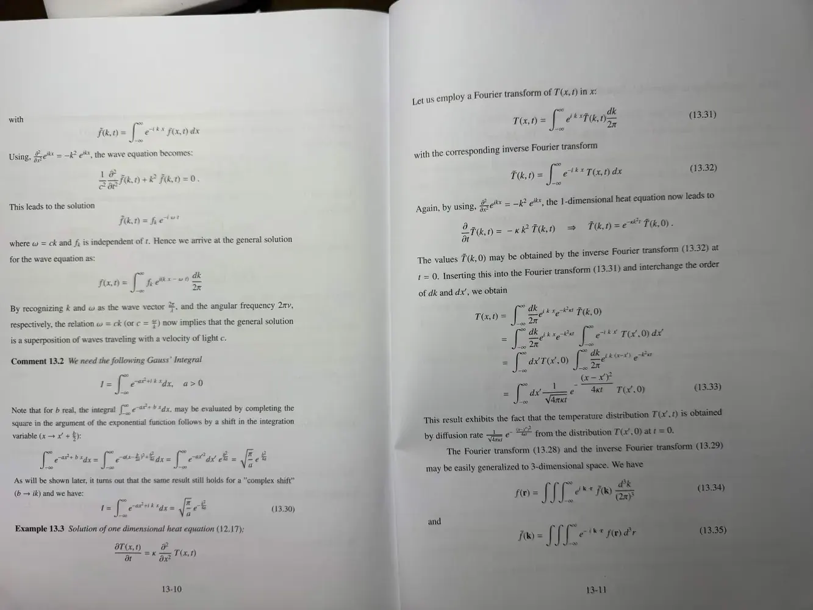
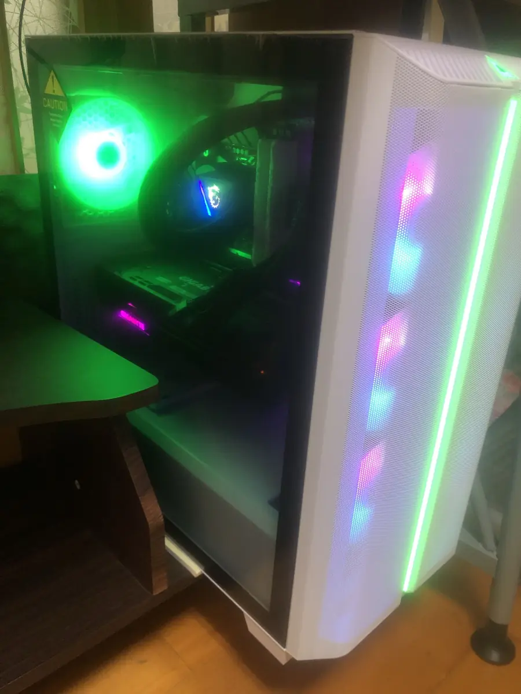

I’m an IB Year 2 student at Li Po Chun United World College of Hong Kong and a Research Trainee at MIT City Science Lab @ Taipei Tech. I predict, then verify. When I read a novel I stop and build a theory before the author answers, and since February 2023 I’ve texted those theories to a second Discord account so I can check them against the next chapter. The lab work runs on the same habit. A simulation has to replay byte for byte, so when a forked run differs from the base run, I know the earthquake I injected caused it.
Lab
Research Trainee, Urban Informatics, MIT City Science Lab @ Taipei Tech, part of the MIT Media Lab City Science network
School
IB Diploma, Li Po Chun United World College of Hong Kong, Class of 2027
Subjects
Physics HL, Chemistry HL, Math AA HL, Economics SL, Chinese A SL, English A SL
Languages
Mandarin, Taiwanese and English (native) · Cantonese (intermediate) · German (A2.2)
My Christmas list was Feynman’s Six Easy Pieces, The Elegant Universe and Physics of the Impossible. Around the same time I noticed the blackboard eraser only glided without streaks when I held it at the right angle.
Sep 2023 to Jun 2024
Saturdays at NTHU
I got into National Tsing Hua University’s gifted physics program (高中學生科學研究人才培育計畫, physics track) through a selective entrance exam. About 80 students, Saturdays from 8 AM to 5 PM. The courses were introductory linear algebra with applications, matrices, multivariate differential calculus, Newtonian mechanics and Lagrangian mechanics.
2025
/gamemode spectator
Space had always felt like something that happened to other people. I was in spectator mode. Then I watched a light curve dip as a planet candidate hundreds of light-years away crossed its star. Wow.

Fig. 1Course notes from the NTHU program.
Off the clockWhen I’m not building
Off the clock
LPC Dragon Dance · since Sep 2024
Dragon dance
I perform with the school’s dragon dance team at school events. In Year 1 we co-created a dragon from recycled cloth and metal bars with artist Yuki Tanguchi at CHAT (The Mills).

Hardware
My own PC build
Immortal
Valorant · peak rank
My peak competitive rank.
Woodworking
I make chairs too
Black belt
Taekwondo
Plus gym and boxing now.
A2.2
Deutsch
German, alongside IB Year 2. Mandarin, Taiwanese and English are native; Cantonese is intermediate.
TrainingSchool and courses
School and courses
When
Where
What
Class of 2027
Li Po Chun United World College of Hong Kong
IB Diploma
2023–24
National Tsing Hua University, Hsinchu
Gifted Physics Program, physics track
2023–24
Taipei Wego Private Senior High School
Bilingual program
Feb–Jun 2024
StanCode SC101
Adapted from Stanford CS106B. Turing Certificate for top-scoring students, and a scholarship
Jul–Sep 2024
StanCode SC201
AI and machine learning, drawing on Stanford CS221, CS229A, CS230 and CS231N
 Daniel Tsen
Daniel Tsen